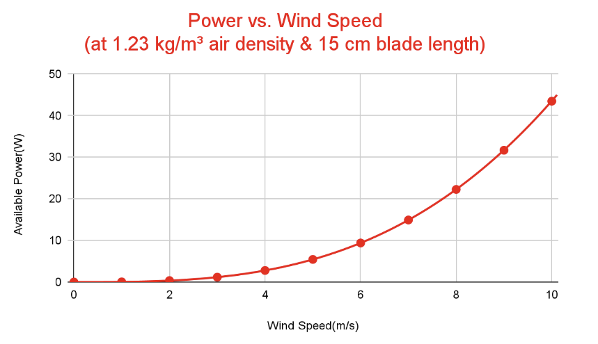
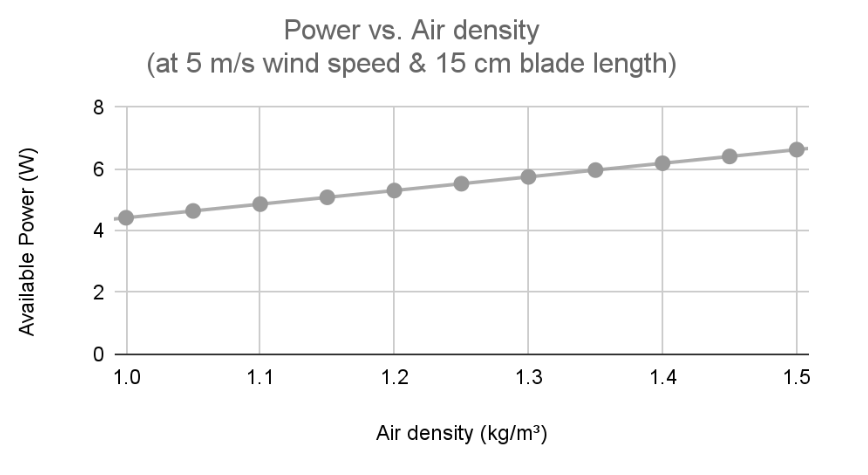
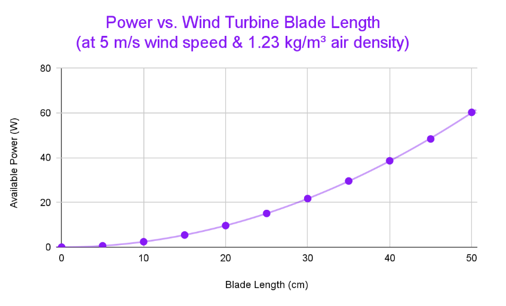
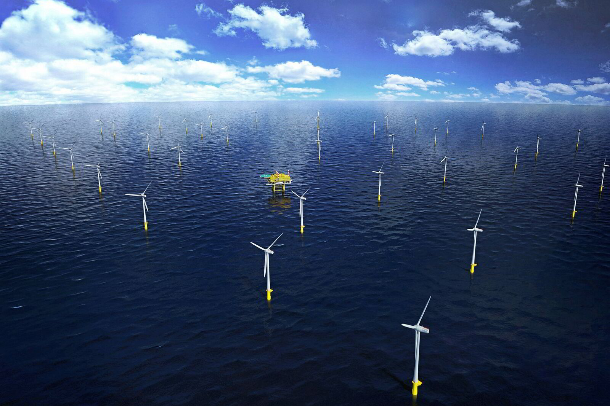
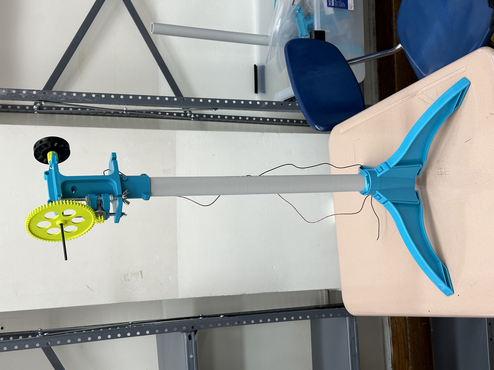
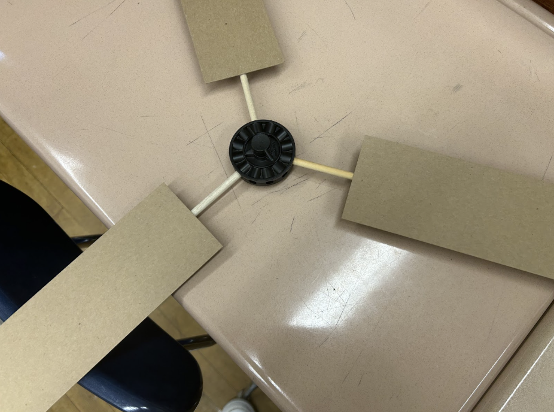
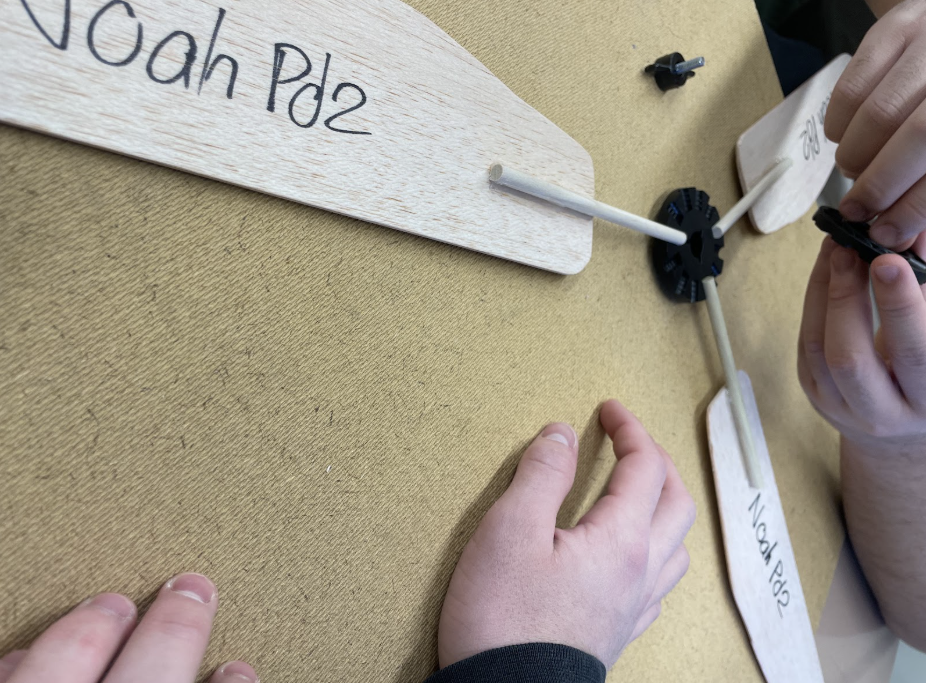
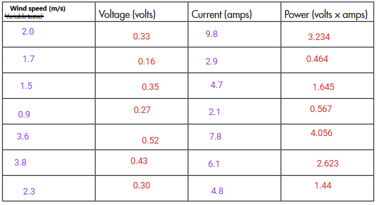
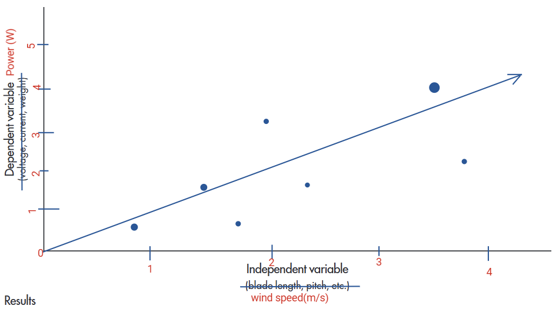

Objective
This is a research and experimentation project designed to study the design of wind turbine blades and how different properties affect the performance of the wind turbine. The goal of this project is to determine the best wind turbine blade and measure the power generated on a model wind turbine.
We also researched the effects of wind turbines on the environment, as well as various features that may be included on a wind turbine to maximize the energy produced from a wind turbine at any moment.
This is a group project in the Bayside High School's Principles of Engineering course. The team consists of me, Bilal Tariq, Noah Iseman, and Osric Rodriguez.
Initial Research
There are several factors in play that affect the amount of power generated by a wind turbine. In our research, we researched the following factors:
Wind Speed
When wind speed increases, the amount of available power increases exponentially. This is because the wind power is proportional to the cube of the wind speed. However, something to note is that the wind direction will be important if the turbine is unable to rotate to capture the winds. Additionally, if the wind speed is too high, the wind turbine has to limit itself or shut itself down to avoid damage.

Graph of available power as a function of the wind speed
Wind Density
When air density increases, the available power also increases at a linear rate. This is because when air density is greater, there is greater air flow, increasing the amount of kinetic energy in the air. Like wind speed, if the wind density is too high, the wind turbine has to limit itself or shut itself down to avoid damage.

Graph of available power as a function of the wind speed
Turbine Blade Length
When the length of the wind turbine blade increases, the available power also increases exponentially. This is because the area of wind that the turbine collects increases. This means that the larger the blade is, the better the turbine will be. Most wind turbines will be as large as they can be, with transportation and surrounding space being their largest limitations.

Graph of power captured as a function of the blade length
Using these measurements, we verified our data with a real world scenerio. The Hohe See and Albatros Wind Farms are 2 offshore wind farms located in the German North Sea 95 km from Borkum, Germany, consisting of a total of 87 Siemens SWT-7.0-154 wind turbines producing a combined total of 640 megawatts in 2020.
According to Thewindpower, the average wind speed of the wind farms is 10.1 m/s, the blade length of the SWT-7.0-154 wind turbine is 75 m, and assuming the air density to be earth's atmospheric pressure at 1.23 kg/m^3. Using this value, the available wind power can be calculated using the formula P = 0.5(1.23kg/m^3)(75m)2π(10.1m/s), which is approximately 11.8 megawatts. The SWT-7.0-154 wind turbine has a rated power of 7 megawatts, meaning that the efficiency would be (7 MW)/(11.8 MW), which is approximately 59.3%, which is approximately the Betz limit of 59.3% efficiency, meaning that this wind turbine is about the maximum possible efficiency. Because there are 87 wind turbines on the two farms, the total power output of the two farms would be 7 MW * 87 = 609 MW, which is approximately a 5% measure of error from the measured value of 640 MW.

An image of the Hohe See and Albatros Wind Farms
We also researched the effects of wind turbines on the surrounding environment. One of the biggest negatives of a wind turbine is its impact on the habitat of birds and bats. Vegetation is cut down for most projects to make way for roads and infrastructure to construct the turbine. However, careful planning and research in the area, as well as using strategies like moving the wires underground, is usually done to mitigate the damage done and to avoid harming endangered species. Furthermore, the habitat loss caused by wind turbines is significantly lower than other infrastructure projects.
Another risk that wind turbines cause is to the birds and bats. Wind turbines are known to collide into birds and bats with a fatality rate from three to five birds per megawatt per year, with the highest recorded being 14 birds per megawatt per year. However, this value is significantly lower than most other infrastructure projects, as well as lower than natural predators. Additionally, there is ongoing research to deter birds and bats from flying into wind turbines.
Design & Development Process
We created the wind turbine model kit without many issues. We created the base of the wind turbine, then shifted our focus on the blades, which we had to prepare many different variations of to perform different experiments for each blade.

Base of the wind turbine

Creating the wind turbine blade

Wind turbine blades after trimming
Analysis
Unsurprisingly, the power increases when the wind speed increases. However, due to a large deviation of values, we are unable to observe clear curves, so we are unable to determine the exact relationship between wind speed and power.

Wind speed to power chart

Measured Wind Speed Graph
Conclusion
Through our research and experimentation, we learned how the air and blade shape determines the power generated on a wind turbine. Our calculations and real-world verification using the Hohe See and Albatros Wind Farms demonstrated that modern wind turbines can achieve efficiency very close to the theoretical Betz limit of 59.3%.
Our wind turbine blade experiments, while showing some data variance, confirmed the positive correlation between wind speed and power generation. However, due to limitations in our testing environment and equipment, we couldn't establish the exact mathematical relationship between these variables in our model.
On the other hand, our research on the environmental impact of wind turbines shows that they do affect the local wildlife, especially birds and bats. However, their impact is significantly lower compared to other infrastructure projects. If the placement of wind turbines is planned carefully, they are one of the best ways to produce electricity.
References
Betz Limit, https://www.alternative-energy-tutorials.com/wind-energy/betz-limit.htmlSiemens SWT-7.0-154 Wind Turbine Data Sheet, https://www.thewindpower.net/turbine_en_1031_siemens_swt-7.0-154.php
Hohe See Wind Farm, https://www.thewindpower.net/windfarm_en_18574_enbw-hohe-see.php
Birds and Bats: Impacts and Regulation, https://www.nyserda.ny.gov/-/media/Project/Nyserda/Files/Publications/Research/Biomass-Solar-Wind/Birds-and-Bats-Impacts-and-Regulation.pdf